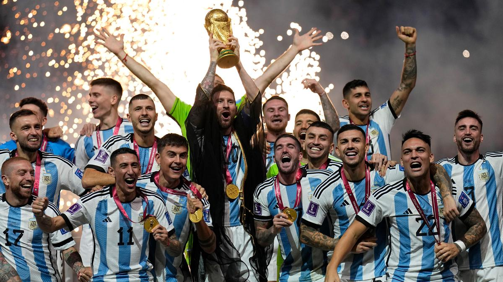
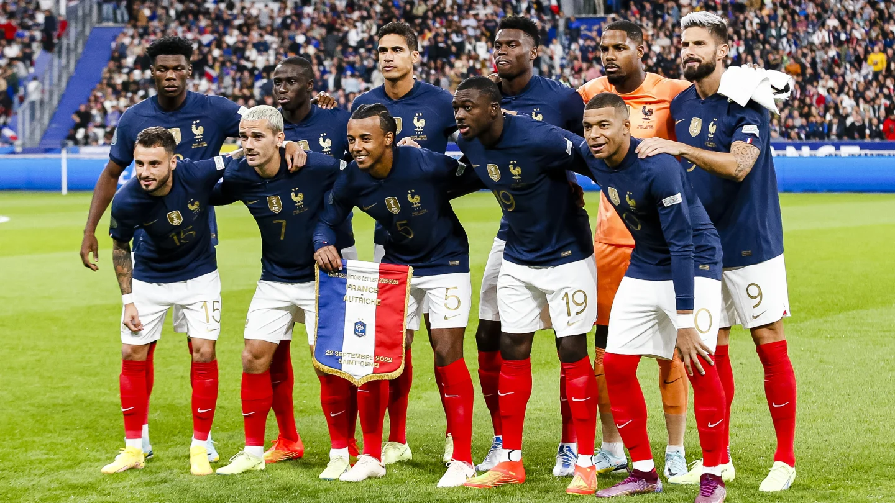
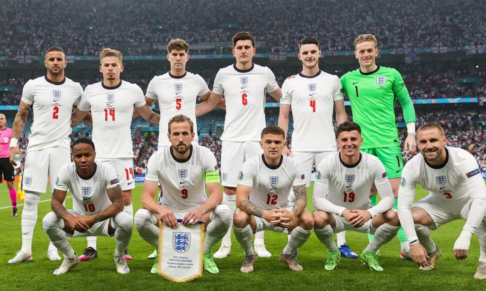
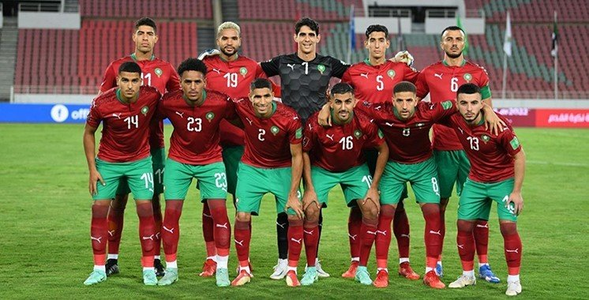
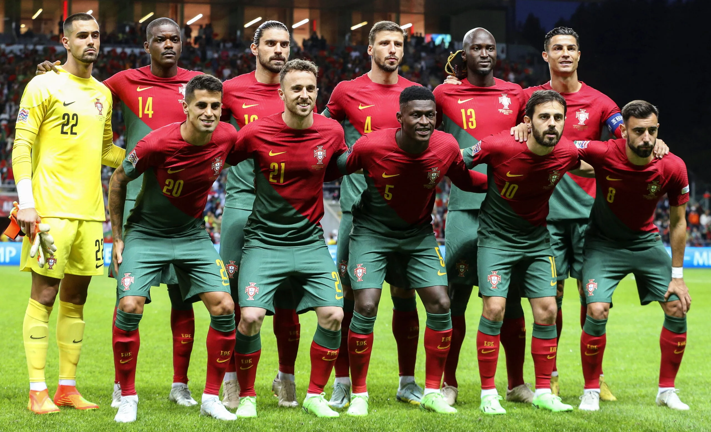
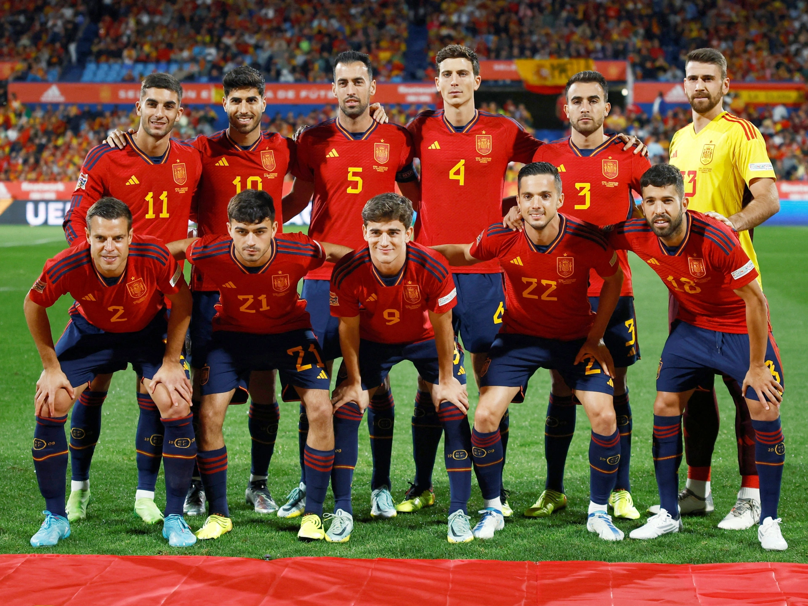
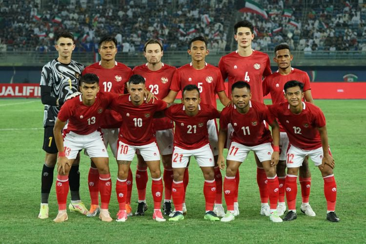

Piala Dunia FIFA (bahasa Inggris: FIFA World Cup) atau sering disebut Piala Dunia saja, adalah kompetisi sepak bola internasional yang diikuti oleh tim nasional putra senior anggota Federasi Sepak Bola Internasional (Fédération Internationale de Football Association, FIFA), badan pengatur sepak bola dunia. Kejuaraan ini telah diselenggarakan setiap empat tahun sekali sejak turnamen 1930, kecuali pada tahun 1942 dan 1946, yang tidak diselenggarakan karena Perang Dunia II. Juara Piala Dunia saat ini adalah Argentina, yang menjuarai turnamen 2022 di Qatar.
Negara Top Peserta Piala Dunia adalah:
      